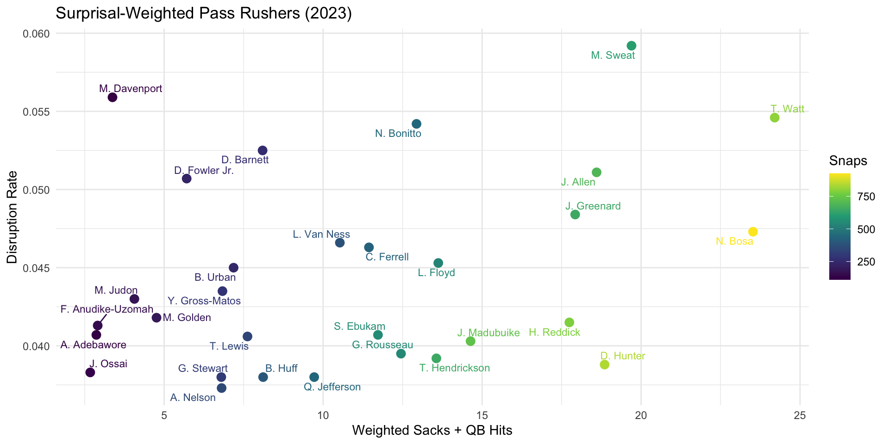

Predicting Offensive Plays in the NFL
Initial Motivation and Goal
- Successfully anticipating whether the offense will run or pass is critical to defensive success.
- In the NFL, winning often comes down to preparation and play-calling — where sideline strategy is just as important as on-field performance.
- Our goal is to build a model that predicts the likelihood of a run or pass play based on pre-snap context — and then use that model to evaluate pass rushers through their ability to generate pressure in unexpected passing situations.
Data Sources
- NFL Play-by-Play Data (2016-2023):
- Core situational features: down, distance, quarter, yardline, score differential, time remaining.
- Formation information and team-specific ‘lagged run rate’.
- Player Tracking Data (2022):
- Positional Data: Provides the (x, y) coordinates for all 22 players and the ball on every frame of a play.
- Player Kinematics: Includes each player’s speed, acceleration, orientation, and direction of motion.
- Event Timestamps: Contains crucial event tags within each play, such as
ball_snap,pass_release, andtackle.
Our Iterative Modeling Approach
1. Basic Model
(Situational)
- Features: Core variables like down, distance, score, and time.
- Performance: Achieves a ~70% accuracy baseline.
- Limitation: Lacks crucial formation and pre-snap motion context.
2. Advanced Model
(Personnel)
- Features: Incorporates formation data and team-specific tendencies.
- Performance: Improves accuracy through targeted feature engineering.
- Role: Acts as a stronger foundation for tracking data integration.
3. Tracking Data Model
(Geometric)
- Features: Adds player tracking data like pre-snap motion, formation compactness, and player alignment.
- Goal: Capture tactical nuances and achieve a 5-10 point accuracy gain.
- Status: Currently refining and validating these new features.
Surprisals: A New Metric for Pass Rusher Evaluation
Surprisal Definition
Surprisal is defined as the negative logarithm of the probability of what actually happened:
\[ \text{Surprisal} = - \log \big( \text{probability of observed event} \big) \]
This measures how “surprising” or “informative” an event is — rarer events have higher surprisal.
- Why Surprisal Matters:
- Weights pass rush performance by play predictability
- Highlights players who excel in unexpected passing situations
- Provides context-aware evaluation beyond raw statistics
Applying the Surprisal Metric
1. Calculate Play-Specific Surprisal
First, we assign a “difficulty score” to every play based on our model’s prediction.
For a Pass Play: \[ \text{Surprisal}_i = -\log(P_i(\text{Pass})) \]
For a Run Play: \[ \text{Surprisal}_i = -\log(1 - P_i(\text{Pass})) \]
(where i represents a single play)
2. Aggregate for Season Totals
A player’s total score is the sum of the surprisal values from their specific achievements.
Weighted Sacks: \[ \text{Weighted Sacks} = \sum_{i \in \text{Sacks}} \text{Surprisal}_i \] (Sum of surprisal scores for every play
iwhere the player got a sack)Final Disruption Rate: \[ \text{Rate} = \frac{\text{Weighted Sacks} + \text{Weighted Hits}}{\sum_{j \in \text{All Pass Snaps}} \text{Surprisal}_j} \] (This normalizes their production by their total opportunity, weighted by difficulty)
Pass Rusher Performance: Surprisal-Weighted Results
Sweat and Watt Led the Pack
Tracking Data Model
This model uses player tracking data to create geometric features.
Ensemble Method: Predictions from our base models are fed as input features into this final model.
Placeholder Performance:
Cross-Validated AUC: ~0.85
Accuracy: ~79%
Key Features:
- Core Indicators:
- Formation Geometry: Formation width, depth, compactness, and WR spread.
- Player Kinematics: Avg. player speed, acceleration, and density at the snap.
- Advanced Features:
- Running Lane Potential: Measures defensive traffic in a target run gap. \[ \text{Potential} = \sum_{d \in D} \frac{1}{\text{dist}(d, \text{lane})^2} \]
- Defensive Convex Hull: Area controlled by the defensive perimeter.
- Pitch Control (Voronoi): Ratio of field area controlled by offense vs. defense.
The Predictive Ceiling: Why Perfect Accuracy is a Myth
Our model gives us a powerful edge, but a margin of unpredictability is deliberately engineered into modern football. It’s a game of wits, not just statistics.
- From Tactic to Philosophy
- With the rise of the RPO, the choice is made post-snap. As Kessler (2025) notes, “the line between a ‘run’ and a ‘pass’ is often more philosophical than tactical.”
- The Human Element
- Coaches intentionally break their own data-driven tendencies, while quarterbacks can audible at the line based on the defensive look.
- The Real-World Decision
- Ultimately, a play call is a decision made under pressure, with incomplete information, based on game plan, and in response to a thinking adversary.
The Case for Continuous Models?
Beyond Binary: The run/pass choice isn’t binary. Continuous models capture subtle “tells”—like a safety’s movement—that shift probabilities in real-time.
For Film Study: This provides a dynamic tool for coaches, allowing them to visualize exactly how pre-snap movements alter the likelihood of a run vs. a pass, frame-by-frame.
Future Work: Evolve to multi-class models (run, screen, deep pass) or regression models that predict outcomes like expected yards.

Source: “Exposing Coverage Tells in the Pre-Snap” by Smit Bajaj (Kaggle)
Key Findings and Implications
- Model Performance:
- Basic models achieve ~70% accuracy ceiling
- Tracking data features show promise for meaningful improvements
- Team and game-specific variation reveals strategic complexity
- Pass Rusher Evaluation:
- Surprisal-weighted metrics provide context-aware player assessment
- Top performers excel in unpredictable passing situations
- Traditional stats miss important situational nuances
- Strategic Insights:
- Predictability varies significantly across teams and situations
- Perfect prediction is theoretically impossible due to strategic adaptation
- Models must account for intentional unpredictability
Plan of Action: Completed Steps
-
- Merged PBP, personnel, and tracking data (2016-2023).
- Cleaned and standardized all data sources.
-
- M1 (Situational): Baseline model using down, distance, etc.
- M2 (Personnel): Added offensive/defensive formations.
- M3 (Tracking): Integrated pre-snap geometric features.
-
- Developed the “Surprisal” framework to weight stats by play predictability.
Plan of Action: Next Steps
-
- Refine and validate the Surprisal-weighted metric.
- Produce final player rankings and visualizations.
-
- Test sub-models (e.g., defense-only tracking) to isolate what information is most valuable for prediction.
-
- Move from a binary classifier to a continuous probability model to better capture the nuance of modern offenses (e.g., RPOs).
Questions?
Appendix: Plots
Interactive Pass Rusher Analysis (2023)
Interactive Team Predictability Dashboard (2023)
Related Work
| Year | Study | Key Angle |
|---|---|---|
| 2024 | Chung – Computer Vision + ML to Predict Offensive Play Calls in College Football | End-to-end vision pipeline (CNN + LSTM) on NCAA broadcast film |
| 2023 | Varadarajan – Trench Chess | Qualitative look at pre-snap “mind games”; highlights alignment & motion cues |
| 2022 | Fernandes et al. – Predicting Plays in the NFL | Gradient-boosted trees on down/distance/score; ~70 % accuracy baseline |
| 2022 | Lee, Chen & Lakshman – Predicting Offensive Play Types in the NFL | Combines personnel, formation & weather; logistic vs. XGBoost comparison |
| 2021 | Ota – Play Type Prediction & Tendency Analysis | Hidden-Markov model captures drive-level momentum |
| 2020 | Otting – Predicting Play Calls with HMMs | First large-scale HMM on play-by-play; stresses sequential dependencies |
| 2019 | Teich et al. – NFL Play Prediction | Random forest vs. neural net; shows feature engineering > model complexity |
| 2018 | Sung – NFL Play Prediction Using Computer Vision | Early attempt to extract formations from broadcast film |
Takeaways for our model:
- Tabular features alone plateau ≈ 70-75 % accuracy → need tracking/CV features.
- Sequential models (HMM, LSTM) add useful context.
- Vision work proves formations are extractable—aligns with our next-step roadmap.
Advanced Model ROC Plot
Basic Model ROC Plot
Feature Importance in Play Prediction

Lagged Run Rates

Lowest vs. Highest Accuracy Games
Mean ROC Curve

Model Performance Across Years

Model Performance Summary

Most and Least Predictable Teams
Pass by WR Count

Pass Rate by Quarter and Time Remaining

Pass Rate by Field Down/Distance

Pass Rate by Score Differential

Pass Rate Trends

Performance Across Years

Prediction Calibration

Prediction Distribution by Actual Outcomes

Residuals vs. Fitted Values